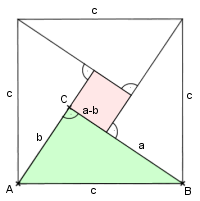
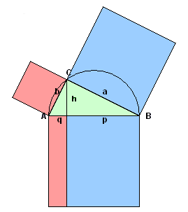

Beweis der Sätze der Satzgruppe des Pythagoras

Beweis Satz des Pythagoras (Bhâskara 12. Jh.)
Das Quadrat mit Seitenlänge c wird gemäss Figur zerlegt.
Es setzt sich also aus vier kongruenten Dreiecken und dem Quadrat mit Seitenlänge a - b zusammen. Dann gilt:
c2 = 4 · 0.5ab + (a - b)2, daher c2 = 2ab + a2 - 2ab + b2
Also in der Tat: c2 = a2 + b2

Beweis des Höhensatzes h2 = p · q
(mit Satz des Pythagoras):
a2 = h2 + p2, b2 = h2 + q2,
also a2 + b2 = c2 = h2 + p2
+ h2 + q2 .
Ersetzt man c mit p + q, so gilt: (p + q)2 = p2 +
2h2 + q2 , also p2 + 2pq + q2 = p2
+ 2h2 + q2 , also p · q = h2 .
Beweis des Kathetensatzes (aus 'Pythagoras' und Höhensatz)
a2 = p2 + h2 = p2 + p · q = p(p + q) = p · cAnalog für b2 = q · c